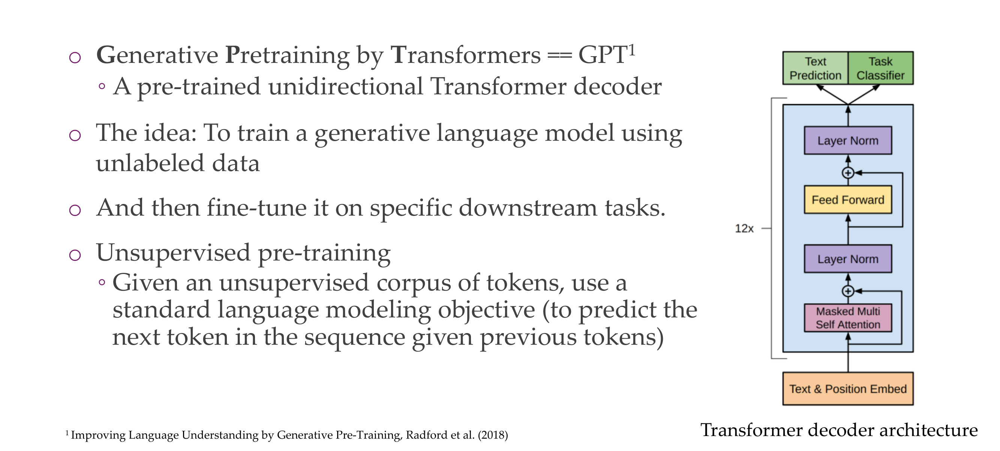
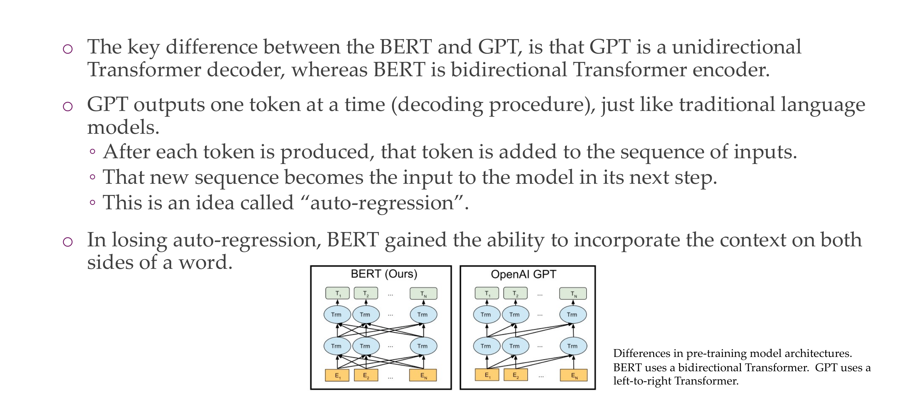
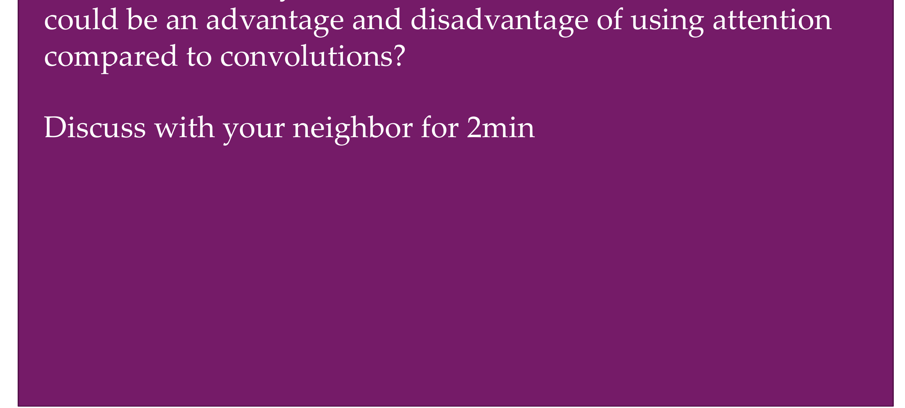

1 General Overview: Transformer Architecture
2 Background knowledge
3 Seq2seq models
4 Neural machine translation with a seq2seq model
5 Defining seq2seq for NMT”: Encoder

h_{t-1} is the hidden state, is this what makes a NN like \(f()\) be recurrent
6 Defining seq2seg for NMT: Decoder
7 Issue of seq2seq models
The problem is that they were trying to compress all info into a context vector \(c\)
8 Attention
9 Here, | found what you were
10 Attention
11 Formal definition of Attention
12 Formal definition of Attention
If the value e or the alignment model is high then it tells you how similar the inputs around position j and the outputs at position i match.
13 Formal definition of Attention
14 Why attention?
15 Self-attention
16 Paying attention in vision
17 Attention is all you need
18 Queries, keys and values
19 Scaled Dot-Product Attention

20 Multi-head attention
21 Multi-head self-attention
22 Multi-head self-attention

23 Transformer encoder
24 Transformer decoder
24.1 Autoregressive Property:
Autoregressive models generate outputs one step at a time in a sequential manner. In the context of natural language processing, this means predicting the next word in a sequence given the preceding words. Autoregressive models are trained to predict the next token in the sequence based on the tokens that have already been generated.
24.2 Decoder in a Transformer:
The decoder in a transformer is responsible for generating the output sequence. It consists of multiple layers, each containing a self-attention mechanism and feedforward neural networks. The self-attention mechanism allows the model to weigh different parts of the input sequence differently when generating each token.
24.3 Cheating and the Mask:
“Cheating” refers to the undesirable situation where the model uses information from future positions in the sequence during training. During training, the model is fed the true output sequence up to the current position to calculate loss and update its parameters. If the model were allowed to attend to future positions, it might artificially inflate its performance by relying on information that it wouldn’t have during actual generation.
The mask applied in the decoder’s self-attention mechanism prevents the model from accessing future information. The mask sets the attention scores for future positions to very small values, essentially blocking the model from attending to tokens that haven’t been generated yet. This ensures that the model learns to generate each token based only on the information available up to that point, aligning with the autoregressive nature of the decoding process.
24.4 Example:
Consider the task of language translation. When translating a sentence from English to French, the decoder generates the translation one word at a time. If it were allowed to attend to words in the future, it might incorrectly use information from the French translation that hasn’t been generated yet. This could lead to overfitting during training and poor generalization to unseen data.
In summary, preventing “cheating” by using a mask ensures that the decoder learns to generate outputs based on the information available up to the current step, improving the model’s ability to generalize to unseen data and maintain the autoregressive property essential for sequence generation tasks.
25 The full Transformer
26 Title
27 Coding a Transformer (PyTorch): init
28 Coding a Transformer (PyTorch): forward pass
tgt: in roder to predict the next word, you can look at the preceding word. So the target is the same as source except that is shofted one to the left. We do it so that it shofts and we are able to predict the last word
29 Transformer: Positional encodings
Attention is a permutation-invariant operation, but this is not ideal because we might have that sometimes the order is important like with ‘not’
positional enconding to locate where are you at the beginning or at the end
30 Transformer: Positional encodings
if they are apart from each other their positional encoding should be different
31 Coding the Positional Encodings (PyTorch)
32 Pros & Cons
It scales quadratically with the num inputs, the matrix is N * N let see an example:
The quadratic scaling of transformers with respect to the number of inputs primarily arises from the self-attention mechanism used in transformers. In self-attention, each element in the input sequence attends to all other elements, and the attention scores are computed pairwise. This leads to a quadratic dependency on the number of inputs.
Let’s consider a simple example with a sequence of length \(N\). For simplicity, let’s assume each input element has a dimension of 1 for illustration purposes.
What about other dimensions, wel that can be possible because remember we have our embeddings as the input to the NN, not the words itself
Like in this picture our dimensions are clearly larger than 1 for the embeddings
Original Sequence (1D): \[ x_1, x_2, x_3, \ldots, x_N \]
Self-Attention Weights: For each element \(x_i\), self-attention computes a weight for all other elements \(x_j\) based on their relationships. This results in a square matrix of attention weights:
\[ \begin{bmatrix} w_{1,1} & w_{1,2} & \ldots & w_{1,N} \\ w_{2,1} & w_{2,2} & \ldots & w_{2,N} \\ \vdots & \vdots & \ddots & \vdots \\ w_{N,1} & w_{N,2} & \ldots & w_{N,N} \\ \end{bmatrix} \]
Each entry \(w_{i,j}\) represents the attention weight between \(x_i\) and \(x_j\).
Output for Each Element: The output for each element \(x_i\) is computed as a weighted sum of all elements based on the attention weights:
\[ \text{output}_{i} = w_{i,1} \cdot x_1 + w_{i,2} \cdot x_2 + \ldots + w_{i,N} \cdot x_N \]
This involves \(N\) multiplications for each element.
Total Complexity: For \(N\) elements, we need to compute \(N\) attention weights for each element, resulting in a total of \(N^2\) attention weights. Therefore, the overall complexity is quadratic, \(O(N^2)\), due to the pairwise comparisons.
This quadratic scaling becomes computationally expensive as the sequence length increases, leading to challenges in handling long sequences efficiently. To address this, techniques like sparse attention patterns and approximations have been proposed in research to reduce the computational cost while maintaining the benefits of self-attention.
33 Recommended papers
34 BERT
35 BERT input representation
36 BERT pre-training
37 BERT fine-tuning
38 BERT for feature extraction
With BERT we gained contextualized word embeddings
39 BERTology

40 GPT-{1, 2, 3, 4}

With bert you did not have a generative model, with GPT you can because it only relies on the past to predict the next ones. Bert mask the word in the middle, but sees at the right and left to see the context.
You dont need to have labels, because pred the next word is just looking in the corpus what is the actual word that should fit.
41 GPT-{1, 2, 3}
42 GPT: In- context learning
The three settings we explore for in-context learning Traditional fine-tuning (not used for GPT-3)The ability to not train gradients is a cool ability that these hug models have
What is in-context learning?
In natural language processing or conversation, understanding a word or phrase in context means considering the words or sentences that precede and follow it to grasp its intended meaning. This is important because the same word can have different meanings in different situations.
In the context of machine learning, especially with language models like GPT-3, providing information “in context” often involves supplying relevant details or context so that the model can generate responses or perform tasks that take into account the broader context of the input. This is particularly important for tasks that require understanding and generating coherent and contextually appropriate language.
43 Discuss
For models like StableDiffusion, Dalle, EMU video etc. T5Why may encoders models be favorable compared to decoder models?
Decoders are also trained with masks but if you want to predict the next word, this representation looks at everything that comes before, so in a way if that is what you care about there is no mack really (because you are looking at everything that was looked before)
Nobody knows the answer for this question
Hypothesis is that encoders compress the information, while for Large language models, they are basically the job of encoding and decoding at the same time, because th closer you get to the ouput the more you need to go back to i.e correct grammar and very low level features, and somewhere in the middle of these decoder models there is the summary semantics that you could use for the vission models but you don’t know exactly where those features are. So for encoders you know exaclty where th summary is because that is still the bottleneck still but for decoders we dont know where to take the features
A CNN is an encoder
Unet also has this decoder then the decoder part like
44 GPT vs BERT

45 Multimodal Transformer architecture: CLIP
46 Multimodal Transformer architecture: CLIP
Here we want things to be close but different. That is hard, and with these hard examples we learn new features and learn more
Now differentiating a dog vs a sheep that would be easier and eventually you will not learn anything.
1:32
47 Multimodal Transformer architecture: CLIP
Because they use a text encoder, like BERT, they can do Zero-shot for classification images
48 CLIP: Zero-Shot Examples
49 CLIP: Robustness
- Better because of the internet:
CLIP is pre-trained on a large dataset with diverse images and associated text from the internet. This diverse pre-training data helps the model learn features that are more transferable across different tasks and domains. In contrast, a supervised ImageNet model might be optimized for the specific categories present in ImageNet, and its features may not generalize as well to new, unseen classes.
- Better because we can guide it using engineered prompts:
In zero-shot learning with CLIP, you can provide textual prompts to guide the model’s behavior. This allows you to specify the task or class you’re interested in, enabling the model to adapt its predictions based on the provided textual information
- Less prone to overfitting due to have trained in larger dataset:
Supervised models trained on specific datasets, such as ImageNet, may be prone to overfitting to the idiosyncrasies of that dataset. CLIP, having been trained on a broader range of data, may be less prone to overfitting to specific dataset biases
- More data more understanding of semantics:
CLIP’s strength lies in its ability to understand the semantic relationships between images and text. A larger dataset provides more examples of diverse language-image pairs, allowing the model to learn richer semantic embeddings
50 CLIP: Usage in other models

51 CLIP: Shortcomings
CLIP does not have a decoder, so it cannot generate text
52 Visual Language Model: Flamingo
Basically with CLIP you give images, out labels in form of a prompt text
With flamingo you give images and text prompts and can generate now the output cpation for an specific image
GPT, you give it some text and is able to see what is next because it uses decoders
53 Visual Language Model: Flamingo
The language model is frozen, but you add this cross attention gates. So the cross atentions is sort of similar to the encoder decoder structure, when this language model can attend to the visual inputs. The pink is what is being learned. The visual encoder are also keept frozen.
The perciver part allows you to change the representation of the encoder
54 Visual Language Model: Flamingo
Here there is an encoder and a decoder
55 Vision Transformer

56 Understanding a “Figure 1”
This is similar to BERT, in bert we have positional embedding.
Here we split the picture but still we conserve the order by remembering the index values which define the value
Bert process information in parallel, like in the paper see image below and why do we need positional embeding is because:
BERT (Bidirectional Encoder Representations from Transformers) is a transformer-based model designed for natural language processing tasks. Unlike traditional sequential models, transformers process input data in parallel, which makes them highly efficient but also means they don’t inherently understand the order of the input sequence. To address this limitation and enable transformers to capture sequential information, positional embeddings are used.
Positional embeddings are added to the input embeddings to provide information about the position of each token in a sequence. In BERT, the model processes the input tokens in parallel, and without positional embeddings, it would have no inherent understanding of the order of the tokens. Positional embeddings help the model distinguish between tokens based on their position in the sequence, allowing it to capture the sequential structure of the input.
Coming back to ViT model, here we can see that the model also process information in parallel that’s why we need positional embedding so that we can then learnthe order of how the pic was constructed
57 Quiz: From what you now know about attention, what

Both attention mechanisms and convolutions are essential components in neural network architectures, and they each have their advantages and disadvantages. Here’s a comparison of the two:
57.1 Attention Mechanisms:
57.1.1 Advantages:
Global Context Handling: Attention mechanisms allow the model to focus on different parts of the input sequence when making predictions, enabling the model to consider global context and dependencies.
Variable Receptive Field: Attention doesn’t enforce a fixed receptive field, meaning the model can attend to different parts of the input sequence with varying degrees of focus. This flexibility can be beneficial for tasks where capturing long-range dependencies is crucial.
Sequence-to-Sequence Tasks: Attention mechanisms have been particularly successful in sequence-to-sequence tasks, such as machine translation, where the input and output sequences can have varying lengths and alignments.
57.1.2 Disadvantages:
Computational Complexity: Attention mechanisms can be computationally expensive, especially with large sequences, as they require pairwise comparisons between all elements in the sequence.
Memory Requirements: The model needs to store attention weights for each element in the sequence, leading to increased memory requirements.
57.2 Convolutional Operations:
57.2.1 Advantages:
Parameter Sharing: Convolutional layers use shared weights, which reduces the number of parameters in the model. This can make convolutional networks more computationally efficient and easier to train, especially on tasks with limited data.
Local Receptive Field: Convolutional layers have a fixed-size receptive field, allowing them to capture local patterns and spatial hierarchies efficiently.
Translation Invariance: Convolutional layers can provide some degree of translation invariance, meaning they can recognize patterns regardless of their exact position in the input.
57.2.2 Disadvantages:
Limited Global Context: Convolutional layers have a fixed receptive field, which may limit their ability to capture long-range dependencies in the data.
Not Well-Suited for Sequence Tasks: While convolutional layers are effective for image-related tasks, they may not be as naturally suited for sequence-to-sequence tasks where the input and output lengths can vary.
In practice, a combination of both attention mechanisms and convolutional layers is often used in hybrid models to leverage the strengths of each. For example, the Transformer architecture combines self-attention mechanisms with feedforward layers, providing an effective approach for a variety of natural language processing tasks.
58 Vision Transformer
59 Vision Transformer
In ViT we actually learn the positional embeddings, compared to Bert, we can actually visualize them and see that
60 Attention as a superset of convolutions
61 Training a ViT is more difficult
62 Vil features
63 Also here: ImageNet can (more or less) be solved with textures
64 Swin Transformer: add hierarchy back in?
65 Hybrid Architectures get best performances (atm)
66 The Perceiver
67 The Perceiver: main idea
68 The Perceiver: Taming quadratic complexity
69 Title
70 Notes on weight sharing for CNN
A convolutional layer is generally comprised of many “filters”, which are usually 2x2 or 3x3. These filters are applied in a “sliding window” across the entire layer’s input. The “weight sharing” is using fixed weights for this filter across the entire input. It does not mean that all of the filters are equivalent.
To be concrete, let’s imagine a 2x2 filter 𝐹 striding a 3x3 input 𝑋 with padding, so the filter gets applied 4 times. Let’s denote the unrolled filter 𝛽
\[ \mathbf{X} = \begin{bmatrix} x_{11} & x_{21} & x_{31} \\ x_{12} & x_{22} & x_{32} \\ x_{13} & x_{23} & x_{33} \\ \end{bmatrix} \]
\[ \mathbf{F} = \begin{bmatrix} w_{11} & w_{21} \\ w_{12} & w_{22} \\ \end{bmatrix} \]
\[ \boldsymbol{\beta} = \begin{bmatrix} w_{11} & w_{12} & w_{21} & w_{22} \\ \end{bmatrix} \]
\[ \mathbf{F} \cdot \boldsymbol{\beta} = \begin{bmatrix} \beta \cdot [x_{11}, x_{12}, x_{21}, x_{22}] & \beta \cdot [x_{12}, x_{13}, x_{22}, x_{23}] \\ \beta \cdot [x_{21}, x_{22}, x_{31}, x_{32}] & \beta \cdot [x_{22}, x_{23}, x_{32}, x_{33}] \end{bmatrix} \]
“Weight sharing” means when we apply this 2x2 filter to our 3x3 input, we reuse the same four weights given by the filter across the entire input. The alternative would be each filter application having its own set of inputs (which would really be a separate filter for each region of the image), giving a total of 16 weights, or a dense layer with 4 nodes giving 36 weights.
Sharing weights in this way significantly reduces the number of weights we have to learn, making it easier to learn very deep architectures, and additionally allows us to learn features that are agnostic to what region of the input is being considered.